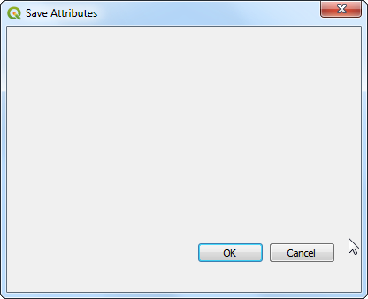
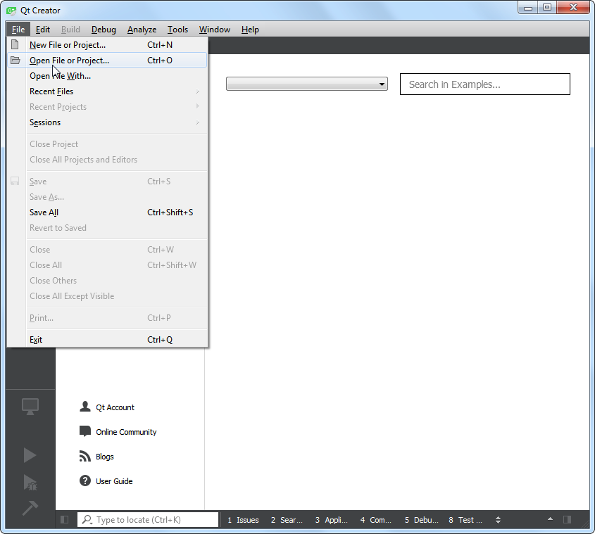
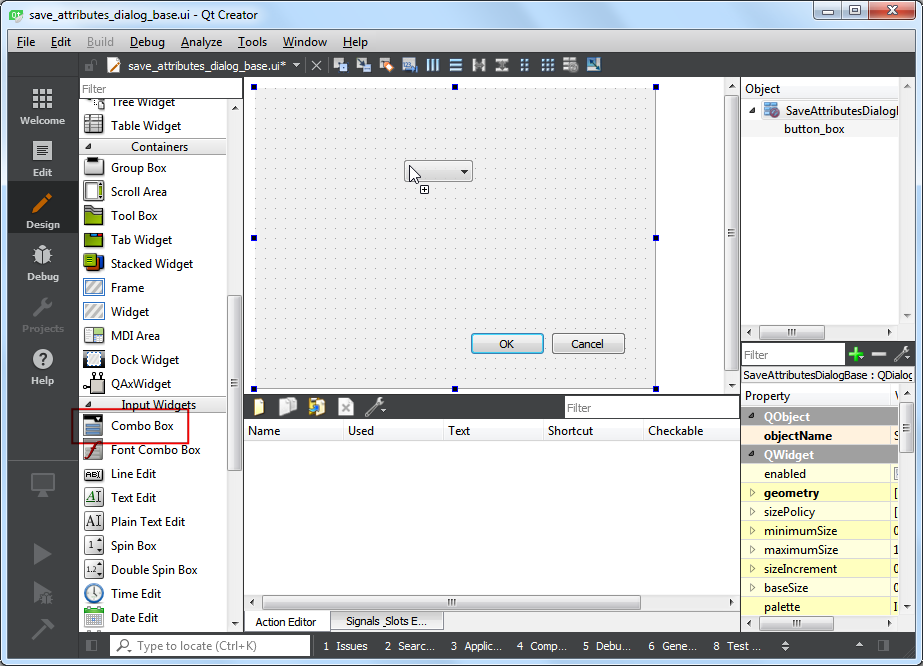
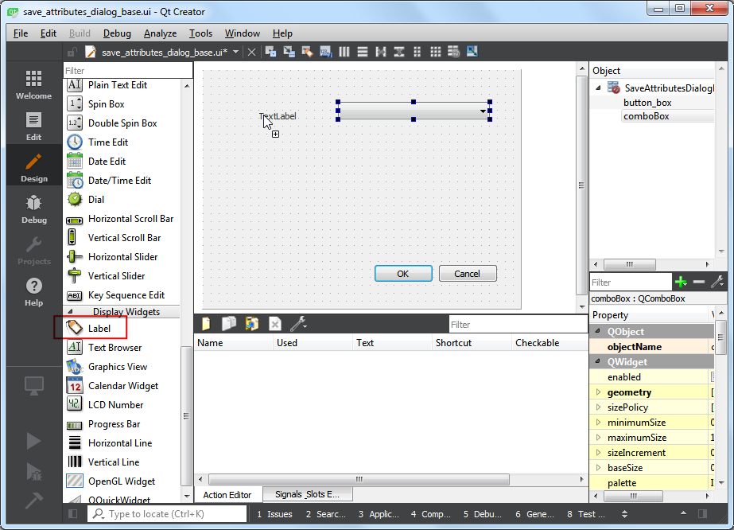
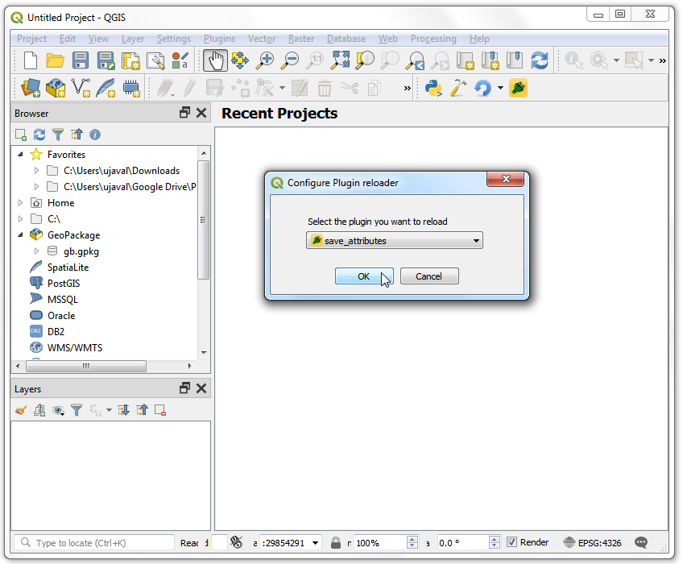
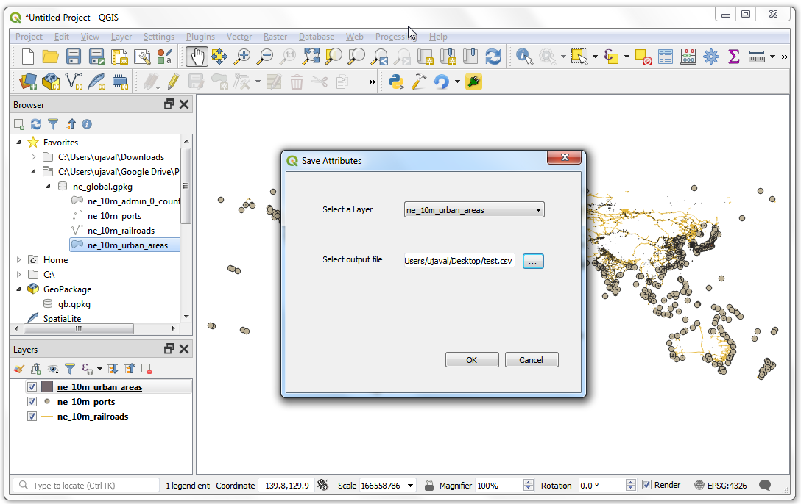
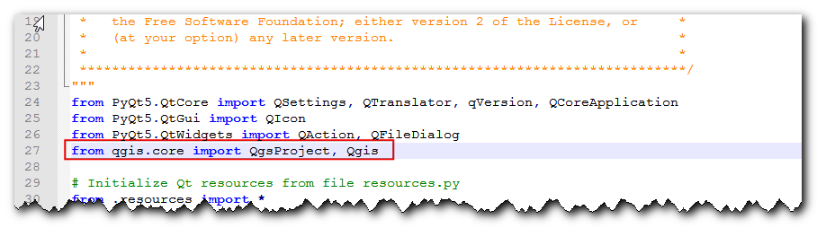

ساخت پلاگین پایتون (QGIS3)¶
پلاگین ها یک روش عالی برای توسعه عملیاتی QGIS هستند. با استفاده از پایتون می توانید افزونه هایی را بنویسید که می توانند افزودن یک دکمه ساده تا جعبه ابزارهای غیرمتعارف باشد. این آموزش روند کار ایجاد محیط توسعه ، طراحی رابط کاربری برای یک افزونه و نوشتن کد برای تعامل با QGIS را بیان می کند. لطفاً برای آشنایی با اصول اولیه ، آموزش: doc: getting_started_with_pyqgis را مرور کنید.
توجه
اگر در حال ساخت یک افزونه جدید هستید ، من اکیداً توصیه می کنم به جای پلاگین GUI که در این مقاله آموزشی توضیح داده شده ، یک پلاگین پردازشProcessing Plugin بسازید. برای جزئیات بیشتر به: Doc: processing_python_plugin مراجعه کنید.
نمای کلی تمرین¶
ما یک پلاگین ساده به نام Save Attributes برای ذخیره مشخصات توصیفی ایجاد خواهیم کرد که به کاربران امکان می دهد یک لایه برداری را انتخاب کرده و ویژگی های آن را در یک فایل CSV بنویسند.
اخذ داده¶
ایجادکننده Qt¶
Qt یک چارچوب توسعه نرم افزار است که برای توسعه برنامه هایی که بر روی ویندوز، مک، لینوکس و همچنین سیستم عامل های مختلف تلفن همراه اجرا می شوند، استفاده می شود. خود QGIS با استفاده از چارچوب Qt نوشته شده است. برای توسعه افزونه، ما از برنامه ای به نام «Qt Creator <https://doc.qt.io/qt-5/qtdesigner-manual.html>`_ برای طراحی رابط برای افزونه خود استفاده خواهیم کرد.
نصب کننده Qt Creator را از «Qt Offline Installers <https://www.qt.io/offline-installers>» دانلود و نصب کنید. مطمئن شوید که Qt Creator را در صفحه دانلود انتخاب کرده اید. توجه داشته باشید که برای نصب بسته باید یک حساب Qt رایگان ایجاد کنید.
توجه
نصب کننده OSGeo4w برای QGIS در ویندوز شامل یک کپی از برنامه Qt Designer است که یک نسخه سبک از Qt Creator است و برای ساخت پلاگین ها کاملاً مناسب است. می توانید دانلود Qt Creator را نادیده بگیرید و به جای آن از :menuselection:`C:\OSGeo4W64\bin\qgis-designer استفاده کنید.
پیوندهای پایتون برای Qt¶
از آنجایی که ما در حال توسعه افزونه در پایتون هستیم، باید پیوندهای پایتون را برای Qt نصب کنیم. روش نصب اینها به پلتفرمی که استفاده می کنید بستگی دارد. برای ساخت پلاگین ها به ابزار خط فرمان «pyrcc5» نیاز داریم.
پنجره ها
پیوندهای پایتون مربوطه در نصب QGIS در ویندوز گنجانده شده است. اما برای استفاده از آنها از پوشه افزونه، باید مسیر نصب QGIS را مشخص کنیم.
یک فایل Windows Batch (پسوند bat.) با محتوای زیر ایجاد کنید و آن را به عنوان "compile.bat" در رایانه خود ذخیره کنید. بعداً این فایل را در پوشه افزونه کپی می کنیم. اگر QGIS را در مسیر دیگری نصب کرده اید، مسیر خود را جایگزین C:\OSGeo4W64\bin\ کنید.
@echo off
call "C:\OSGeo4W64\bin\o4w_env.bat"
call "C:\OSGeo4W64\bin\qt5_env.bat"
call "C:\OSGeo4W64\bin\py3_env.bat"
@echo on
pyrcc5 -o resources.py resources.qrc

مک
مدیر بسته Homebrew <http://brew.sh>`_ را نصب کنید. با اجرای دستور زیر بسته «PyQt» را نصب کنید
brew install pyqt
- لینوکس
بسته به توزیع خود، بسته «python-qt5» را پیدا و نصب کنید. در توزیع های مبتنی بر اوبونتو و دبیان، می توانید دستور زیر را اجرا کنید:
sudo apt-get install python-qt5
توجه
ممکن است متوجه شوید که QGIS قبلاً این بسته را نصب کرده است.
یک ویرایشگر متن یا یک IDE پایتون¶
هر نوع توسعه نرم افزاری نیاز به یک ویرایشگر متن خوب دارد. اگر قبلاً یک ویرایشگر متن مورد علاقه یا یک IDE (محیط توسعه یکپارچه) دارید، می توانید از آن برای این آموزش استفاده کنید. در غیر این صورت، هر پلتفرم طیف گسترده ای از گزینه های رایگان یا پولی را برای ویرایشگرهای متن ارائه می دهد. یکی را انتخاب کنید که متناسب با نیاز شما باشد.
این آموزش از ویرایشگر Notepad++ در ویندوز استفاده می کند.
پنجره ها
Notepad++ <http://notepad-plus-plus.org/>`_ یک ویرایشگر رایگان خوب برای ویندوز است. ویرایشگر Notepad++ <https://notepad-plus-plus.org/download/>`_ را دانلود و نصب کنید.
توجه
اگر از Notepad++ استفاده می کنید، حتماً به بروید و Replace by space را فعال کنید. پایتون در مورد فضای سفید بسیار حساس است و این تنظیم باعث می شود که برگه ها و فضاها به درستی رفتار شوند.
پلاگین افزونه ساز¶
یک پلاگین QGIS مفید به نام "Plugin Builder" وجود دارد که تمام فایل های لازم و کد دیگ بخار را برای یک پلاگین ایجاد می کند. افزونه "Plugin Builder" را پیدا و نصب کنید. برای جزئیات بیشتر در مورد نحوه نصب افزونه ها به استفاده از پلاگین Plugins مراجعه کنید.
افزونه Plugins Reloader¶
این افزونه کمکی دیگری است که امکان توسعه تکراری پلاگین ها را فراهم می کند. با استفاده از این افزونه، می توانید کد پلاگین خود را تغییر دهید و بدون نیاز به راه اندازی مجدد QGIS هر بار، آن را در QGIS منعکس کنید. افزونه «Plugin Reloader» را پیدا و نصب کنید. برای جزئیات بیشتر در مورد نحوه نصب افزونه ها به استفاده از پلاگین Plugins مراجعه کنید.
توجه
Plugin Reloader یک افزونه آزمایشی است. اگر نمی توانید آن را پیدا کنید، مطمئن شوید که :guilabel: نمایش افزونه های آزمایشی در تنظیمات :guilabel:`Plugin Manager را علامت زده اید.
روش¶
QGIS را باز کنید. به بروید.

گفتگوی :guilabel:'QGIS Plugin Builder' را با یک فرم مشاهده خواهید کرد. می توانید فرم را با جزئیات مربوط به افزونه ما پر کنید. :guilabel:'Class name' نام کلاس پایتون خواهد بود که حاوی منطق پلاگین است. این نام پوشه حاوی تمام فایل های افزونه نیز خواهد بود. "SaveAttributes" را به عنوان نام کلاس وارد کنید. :guilabel:`Plugin name' نامی است که پلاگین شما تحت آن در :guilabel:`Plugin Manager ظاهر می شود. نام را به عنوان "ذخیره ویژگی ها" وارد کنید. در قسمت :guilabel:'Description' توضیحاتی اضافه کنید. :guilabel:`نام ماژول، نام فایل اصلی پایتون برای افزونه خواهد بود. آن را به عنوان «save_attributes» وارد کنید. شماره نسخه ها را همانطور که هستند بگذارید و نام و آدرس ایمیل خود را در قسمت های مربوطه وارد کنید. روی :guilabel:'Next' کلیک کنید.


"دکمه ابزار با گفتگو" را از انتخابگر :guilabel:"Template" انتخاب کنید. مقدار :guilabel:'Text for menu item' نحوه یافتن افزونه شما توسط کاربران در منوی QGIS خواهد بود. آن را بهعنوان «ذخیره ویژگیها بهعنوان CSV» وارد کنید. فیلد Menu تصمیم میگیرد که آیتم افزونه شما در QGIS کجا اضافه شود. از آنجایی که افزونه ما برای داده های برداری است، "Vector" را انتخاب کنید. روی :guilabel:'Next' کلیک کنید.

پلاگین ساز از شما می خواهد که نوع فایل هایی را که باید تولید کنید. انتخاب پیش فرض را نگه دارید و روی :guilabel:`Next کلیک کنید.

از آنجایی که ما قصد انتشار این افزونه را نداریم، میتوانید مقادیر ردیاب اشکال، Repository و :guilabel: صفحه اصلی را به حالت پیشفرض رها کنید. کادر افزونه را به عنوان آزمایشی پرچم گذاری کنید در پایین علامت بزنید و روی :guilabel:`بعدی کلیک کنید.

از شما خواسته می شود که یک دایرکتوری برای افزونه خود انتخاب کنید. در حال حاضر، آن را در دایرکتوری ذخیره کنید که می توانید به راحتی آن را در رایانه خود پیدا کنید و روی :guilabel:'Generate' کلیک کنید.

سپس دکمه :guilabel:`generate را فشار دهید. پس از ایجاد الگوی افزونه شما یک گفتگوی تایید را مشاهده خواهید کرد.

توجه
ممکن است پیامی دریافت کنید که می گوید pyrcc5 در مسیر یافت نمی شود. شما میتوانید این پیام را نادیده بگیرید.
قبل از اینکه بتوانیم از افزونه جدید ایجاد شده استفاده کنیم، باید فایل "resources.qrc" را که توسط افزونه ساز ایجاد شده است، کامپایل کنیم. این فایل بخشی از سیستم منبع Qt <https://doc.qt.io/qt-5/resources.html>`_ است که به همه فایل های باینری استفاده شده در افزونه ارجاع می دهد. برای این افزونه، فقط آیکون افزونه را خواهد داشت. کامپایل کردن این فایل کد برنامه ای را تولید می کند که می تواند در پلاگین مستقل از پلتفرمی که پلاگین در حال اجرا است استفاده شود. دستورالعمل مخصوص پلتفرم را برای این مرحله دنبال کنید.
پنجره ها
اکنون میتوانید فایل «compile.bat» (که در ابتدا در قسمت *Python Bindings for Qt ایجاد شده است) را در پوشه افزونه کپی کنید. پس از کپی کردن، روی فایل دوبار کلیک کنید تا اجرا شود. اگر اجرا با موفقیت انجام شد، یک فایل جدید به نام "resources.py" را در پوشه مشاهده خواهید کرد.

توجه
اگر این مرحله ناموفق بود، میتوانید «cmd.exe» را راهاندازی کنید و با استفاده از دستور «cd» به پوشه افزونه بروید. فایل Batch را با اجرای compile.bat اجرا کنید تا خطا را مشاهده کنید.
مک و لینوکس
ابتدا باید «pb_tool» را نصب کنید. یک ترمینال را باز کنید و از طریق پیپ نصب کنید.
sudo pip3 install pb_tool
یک ترمینال را باز کنید و به فهرست پلاگین بروید و «pb_tool compile» را تایپ کنید. این دستور "pyrcc5" را که به عنوان بخشی از بخش Python Bindings for Qt نصب کرده بودیم اجرا می کند.
pb_tool compile
پلاگین ها در QGIS در یک پوشه خاص ذخیره می شوند. ما باید دایرکتوری پلاگین خود را در آن پوشه کپی کنیم تا بتوان از آن استفاده کرد. در QGIS، پوشه نمایه فعلی خود را با رفتن به پیدا کنید.

در پوشه پروفایل، پوشه پلاگین را در زیر پوشه کپی کنید.

اکنون ما آماده ایم تا نگاهی به پلاگین کاملاً جدیدی که ایجاد کرده ایم داشته باشیم. QGIS را ببندید و دوباره راه اندازی کنید. به بروید و افزونه
Save Attributesرا در برگه :guilabel:`Installed فعال کنید.

متوجه خواهید شد که یک نماد جدید در نوار ابزار افزونه و یک ورودی منوی جدید در زیر وجود دارد. آن را انتخاب کنید تا گفتگوی افزونه راه اندازی شود.

شما متوجه یک گفتگوی خالی جدید با نام Save Attributes خواهید شد. این گفتگو را ببندید.

اکنون کادر محاوره ای خود را طراحی می کنیم و برخی از عناصر رابط کاربری را به آن اضافه می کنیم. برنامه «Qt Creator» را باز کنید و به :menuselection:`File --> Open File or Project بروید.

به فهرست پلاگین بروید و فایل «save_attributes_dialog_base.ui» را انتخاب کنید. روی :guilabel:'Open' کلیک کنید.

توجه
ویندوز پوشه «AppData» را پنهان می کند، بنابراین ممکن است آن را در گفتگوی انتخابگر فایل مشاهده نکنید. میتوانید «AppData» را در اعلان :guilabel: «نام فایل» از فهرست اصلی آن وارد کنید تا آن را باز کنید.
دیالوگ خالی افزونه را خواهید دید. میتوانید عناصر را از پانل سمت چپ در دیالوگ بکشید و رها کنید. ما یک نوع جعبه ترکیبی از نوع :guilabel:`ویجت های ورودی را اضافه می کنیم. آن را به گفتگوی افزونه بکشید.

اندازه جعبه ترکیبی را تغییر دهید و اندازه آن را تنظیم کنید. اکنون یک Label تایپ کنید:guilabel:Display Widget در گفتگو.

روی متن برچسب کلیک کنید و "انتخاب یک لایه" را وارد کنید.

این فایل را با رفتن به ذخیره کنید. توجه داشته باشید که نام شی جعبه ترکیبی "comboBox" است. برای تعامل با این شی با استفاده از کد پایتون، باید به آن با این نام اشاره کنیم.

بیایید افزونه خود را دوباره بارگذاری کنیم تا بتوانیم تغییرات را در پنجره گفتگو مشاهده کنیم. به :menuselection:`Plugin --> Plugin Reloader --> Plugin Reloader را انتخاب کنید. "SaveAttributes" را در گفتگوی :guilabel:"Configure Plugin Reloader" انتخاب کنید.

برای بارگیری آخرین نسخه افزونه، روی دکمه بارگذاری مجدد افزونه کلیک کنید. روی دکمه :guilabel:`Save Attributes as CSV کلیک کنید تا کادر گفتگوی جدید طراحی شده باز شود.

بیایید مقداری منطق به افزونه اضافه کنیم که باکس ترکیبی را با لایه های بارگذاری شده در QGIS پر می کند. به فهرست پلاگین بروید و فایل «save_attributes.py» را در یک ویرایشگر متن بارگیری کنید. ابتدا، در بالای فایل با وارد کردن های دیگر وارد کنید:
from qgis.core import QgsProject
سپس تا انتها به پایین اسکرول کنید و روش «run(self)» را پیدا کنید. این روش زمانی فراخوانی می شود که روی دکمه نوار ابزار کلیک کنید یا آیتم منوی افزونه را انتخاب کنید. کد زیر را در ابتدای روش اضافه کنید. این کد لایههای بارگذاری شده در QGIS را دریافت میکند و آن را به شی «comboBox» از گفتگوی افزونه اضافه میکند.
# Fetch the currently loaded layers layers = QgsProject.instance().layerTreeRoot().children() # Clear the contents of the comboBox from previous runs self.dlg.comboBox.clear() # Populate the comboBox with names of all the loaded layers self.dlg.comboBox.addItems([layer.name() for layer in layers])


به پنجره اصلی QGIS برگردید، با کلیک بر روی دکمه :guilabel:'Reload plugin' دوباره افزونه را بارگیری کنید. برای آزمایش این قابلیت جدید، باید چند لایه در QGIS بارگذاری کنیم. پس از بارگذاری چند لایه، افزونه را با رفتن به مسیر راه اندازی کنید. خواهید دید که جعبه ترکیبی ما اکنون با نام لایه هایی که در QGIS بارگذاری شده اند پر شده است.

بیایید عناصر رابط کاربری باقی مانده را اضافه کنیم. به Qt Creator برگردید و فایل «save_attributes_dialog_base.ui» را بارگیری کنید. یک "Label" :guilabel:"Display Widget" اضافه کنید و متن را به "انتخاب فایل خروجی" تغییر دهید. یک "LineEdit" نوع :guilabel:"Input Widget" اضافه کنید که مسیر فایل خروجی را که کاربر انتخاب کرده را نشان می دهد. در مرحله بعد، یک "Push Button" را تایپ کنید:guilabel:"Button" و برچسب دکمه را به "..." تغییر دهید. به نام اشیاء ویجتهایی که باید برای تعامل با آنها استفاده کنیم، توجه کنید. فایل را ذخیره کنید.

اکنون کد پایتون را اضافه می کنیم تا زمانی که کاربر روی دکمه فشاری «...» کلیک می کند، مرورگر فایل را باز می کند و مسیر انتخاب را در ویجت ویرایش خط نشان می دهد. فایل "save_attributes.py" را در یک ویرایشگر متن باز کنید. "QFileDialog" را به "QtWidgets" لیست واردات در بالای فایل اضافه کنید.

یک متد جدید به نام «select_output_file» با کد زیر اضافه کنید. این کد یک مرورگر فایل را باز می کند و ویجت ویرایش خط را با مسیر فایلی که کاربر انتخاب کرده است پر می کند. توجه داشته باشید که «getSaveFileName» چگونه یک تاپل را با نام فایل و فیلتر استفاده شده برمی گرداند.
def select_output_file(self): filename, _filter = QFileDialog.getSaveFileName( self.dlg, "Select output file ","", '*.csv') self.dlg.lineEdit.setText(filename)
حال باید کدی را اضافه کنیم تا با کلیک روی دکمه «...»، متد «select_output_file» فراخوانی شود. به سمت پایین به روش «run» بروید و خط زیر را در بلوکی که دیالوگ مقداردهی شده است اضافه کنید. این کد روش «select_output_file» را به سیگنال «کلیک شده» ویجت دکمه فشاری متصل میکند.
self.dlg.pushButton.clicked.connect(self.select_output_file)
به QGIS برگردید، افزونه را دوباره بارگیری کنید و آن را اجرا کنید. اگر همه چیز خوب پیش رفت، میتوانید روی دکمه «...» کلیک کنید و یک فایل متنی خروجی را از دیسک خود انتخاب کنید.

به QGIS برگردید، افزونه را دوباره بارگیری کنید و آن را اجرا کنید. اگر همه چیز پیش رفت، میتوانید روی دکمه «...» کلیک کنید و یک فایل متنی را از دیسک خود انتخاب کنید.
filename = self.dlg.lineEdit.text() with open(filename, 'w') as output_file: selectedLayerIndex = self.dlg.comboBox.currentIndex() selectedLayer = layers[selectedLayerIndex].layer() fieldnames = [field.name() for field in selectedLayer.fields()] # write header line = ','.join(name for name in fieldnames) + '\n' output_file.write(line) # write feature attributes for f in selectedLayer.getFeatures(): line = ','.join(str(f[name]) for name in fieldnames) + '\n' output_file.write(line)

ما آخرین چیزی را برای اضافه کردن داریم. وقتی عملیات با موفقیت تمام شد، باید همان را به کاربر نشان دهیم. روش ارجح برای دادن اعلان به کاربر در QGIS از طریق روش "self.iface.messageBar().pushMessage()" است. "Qgis" را به "qgis.core" لیست واردات در بالای فایل اضافه کنید و کد زیر را در انتهای روش "run" اضافه کنید.
self.iface.messageBar().pushMessage( "Success", "Output file written at " + filename, level=Qgis.Success, duration=3)
اکنون افزونه ما آماده است. افزونه را دوباره بارگیری کنید و آن را امتحان کنید. متوجه خواهید شد که فایل متنی خروجی که انتخاب کرده اید دارای ویژگی های لایه برداری است.

می توانید دایرکتوری افزونه را فشرده کرده و با کاربران خود به اشتراک بگذارید. آنها می توانند محتویات را در فهرست پلاگین خود باز کرده و افزونه شما را امتحان کنند. اگر این یک افزونه واقعی بود، آن را در «مخزن پلاگین QGIS <https://plugins.qgis.org/>» آپلود میکردید تا همه کاربران QGIS بتوانند افزونه شما را پیدا و دانلود کنند.
توجه
این افزونه فقط برای نمایش است. این افزونه را منتشر نکنید و آن را در مخزن افزونه QGIS آپلود نکنید.
در زیر فایل کامل save_attributes.py به عنوان مرجع است.
# -*- coding: utf-8 -*-
"""
/***************************************************************************
SaveAttributes
A QGIS plugin
This plugin saves the attributes of the selected vector layer as a CSV file.
Generated by Plugin Builder: http://g-sherman.github.io/Qgis-Plugin-Builder/
-------------------
begin : 2019-03-28
git sha : $Format:%H$
copyright : (C) 2019 by Ujaval Gandhi
email : ujaval@spatialthoughts.com
***************************************************************************/
/***************************************************************************
* *
* This program is free software; you can redistribute it and/or modify *
* it under the terms of the GNU General Public License as published by *
* the Free Software Foundation; either version 2 of the License, or *
* (at your option) any later version. *
* *
***************************************************************************/
"""
from PyQt5.QtCore import QSettings, QTranslator, qVersion, QCoreApplication
from PyQt5.QtGui import QIcon
from PyQt5.QtWidgets import QAction, QFileDialog
from qgis.core import QgsProject, Qgis
# Initialize Qt resources from file resources.py
from .resources import *
# Import the code for the dialog
from .save_attributes_dialog import SaveAttributesDialog
import os.path
class SaveAttributes:
"""QGIS Plugin Implementation."""
def __init__(self, iface):
"""Constructor.
:param iface: An interface instance that will be passed to this class
which provides the hook by which you can manipulate the QGIS
application at run time.
:type iface: QgsInterface
"""
# Save reference to the QGIS interface
self.iface = iface
# initialize plugin directory
self.plugin_dir = os.path.dirname(__file__)
# initialize locale
locale = QSettings().value('locale/userLocale')[0:2]
locale_path = os.path.join(
self.plugin_dir,
'i18n',
'SaveAttributes_{}.qm'.format(locale))
if os.path.exists(locale_path):
self.translator = QTranslator()
self.translator.load(locale_path)
if qVersion() > '4.3.3':
QCoreApplication.installTranslator(self.translator)
# Declare instance attributes
self.actions = []
self.menu = self.tr(u'&Save Attributes')
# Check if plugin was started the first time in current QGIS session
# Must be set in initGui() to survive plugin reloads
self.first_start = None
# noinspection PyMethodMayBeStatic
def tr(self, message):
"""Get the translation for a string using Qt translation API.
We implement this ourselves since we do not inherit QObject.
:param message: String for translation.
:type message: str, QString
:returns: Translated version of message.
:rtype: QString
"""
# noinspection PyTypeChecker,PyArgumentList,PyCallByClass
return QCoreApplication.translate('SaveAttributes', message)
def add_action(
self,
icon_path,
text,
callback,
enabled_flag=True,
add_to_menu=True,
add_to_toolbar=True,
status_tip=None,
whats_this=None,
parent=None):
"""Add a toolbar icon to the toolbar.
:param icon_path: Path to the icon for this action. Can be a resource
path (e.g. ':/plugins/foo/bar.png') or a normal file system path.
:type icon_path: str
:param text: Text that should be shown in menu items for this action.
:type text: str
:param callback: Function to be called when the action is triggered.
:type callback: function
:param enabled_flag: A flag indicating if the action should be enabled
by default. Defaults to True.
:type enabled_flag: bool
:param add_to_menu: Flag indicating whether the action should also
be added to the menu. Defaults to True.
:type add_to_menu: bool
:param add_to_toolbar: Flag indicating whether the action should also
be added to the toolbar. Defaults to True.
:type add_to_toolbar: bool
:param status_tip: Optional text to show in a popup when mouse pointer
hovers over the action.
:type status_tip: str
:param parent: Parent widget for the new action. Defaults None.
:type parent: QWidget
:param whats_this: Optional text to show in the status bar when the
mouse pointer hovers over the action.
:returns: The action that was created. Note that the action is also
added to self.actions list.
:rtype: QAction
"""
icon = QIcon(icon_path)
action = QAction(icon, text, parent)
action.triggered.connect(callback)
action.setEnabled(enabled_flag)
if status_tip is not None:
action.setStatusTip(status_tip)
if whats_this is not None:
action.setWhatsThis(whats_this)
if add_to_toolbar:
# Adds plugin icon to Plugins toolbar
self.iface.addToolBarIcon(action)
if add_to_menu:
self.iface.addPluginToVectorMenu(
self.menu,
action)
self.actions.append(action)
return action
def initGui(self):
"""Create the menu entries and toolbar icons inside the QGIS GUI."""
icon_path = ':/plugins/save_attributes/icon.png'
self.add_action(
icon_path,
text=self.tr(u'Save Attributes as CSV'),
callback=self.run,
parent=self.iface.mainWindow())
# will be set False in run()
self.first_start = True
def unload(self):
"""Removes the plugin menu item and icon from QGIS GUI."""
for action in self.actions:
self.iface.removePluginVectorMenu(
self.tr(u'&Save Attributes'),
action)
self.iface.removeToolBarIcon(action)
def select_output_file(self):
filename, _filter = QFileDialog.getSaveFileName(
self.dlg, "Select output file ","", '*.csv')
self.dlg.lineEdit.setText(filename)
def run(self):
"""Run method that performs all the real work"""
# Create the dialog with elements (after translation) and keep reference
# Only create GUI ONCE in callback, so that it will only load when the plugin is started
if self.first_start == True:
self.first_start = False
self.dlg = SaveAttributesDialog()
self.dlg.pushButton.clicked.connect(self.select_output_file)
# Fetch the currently loaded layers
layers = QgsProject.instance().layerTreeRoot().children()
# Clear the contents of the comboBox and lineEdit from previous runs
self.dlg.comboBox.clear()
self.dlg.lineEdit.clear()
# Populate the comboBox with names of all the loaded layers
self.dlg.comboBox.addItems([layer.name() for layer in layers])
# show the dialog
self.dlg.show()
# Run the dialog event loop
result = self.dlg.exec_()
# See if OK was pressed
if result:
filename = self.dlg.lineEdit.text()
with open(filename, 'w') as output_file:
selectedLayerIndex = self.dlg.comboBox.currentIndex()
selectedLayer = layers[selectedLayerIndex].layer()
fieldnames = [field.name() for field in selectedLayer.fields()]
# write header
line = ','.join(name for name in fieldnames) + '\n'
output_file.write(line)
# write feature attributes
for f in selectedLayer.getFeatures():
line = ','.join(str(f[name]) for name in fieldnames) + '\n'
output_file.write(line)
self.iface.messageBar().pushMessage(
"Success", "Output file written at " + filename,
level=Qgis.Success, duration=3)
If you want to give feedback or share your experience with this tutorial, please comment below. (requires GitHub account)